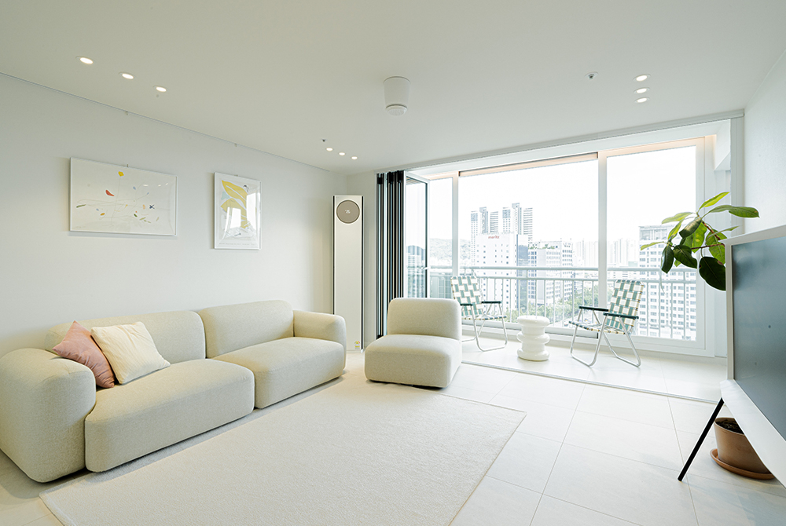
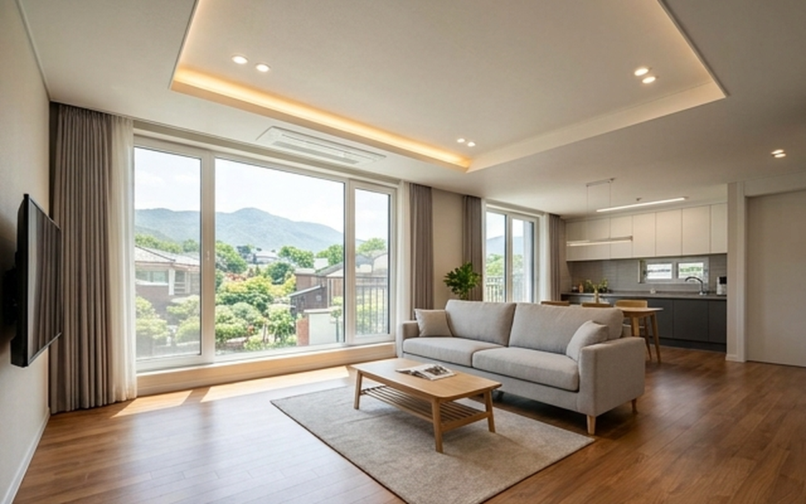

01 / DISCOVER지도 기반 탐색WEB
조건에 맞는 매물을 지도에서
지역과 조건을 중심으로 매물을 탐색하고, 지도에서 주변 정보를 함께 확인하는 주거 탐색 경험.
핵심 매물 검색 · 지도 UI구현 Spring · Naver Maps
지도에서 매물을 찾고, 주변과 시장을 살펴보고, AI에게 다음 탐색을 맡길 수 있도록. 집찾GO는 부동산 탐색 흐름을 하나로 연결하는 팀 프로젝트입니다.
실제 저장소의 서비스 기능과 이미지 자료를 바탕으로 구성했습니다. 저장소에는 영상 파일이 없어 현재 카드에서는 이미지와 기능 설명을 제공합니다.

01 / DISCOVER지역과 조건을 중심으로 매물을 탐색하고, 지도에서 주변 정보를 함께 확인하는 주거 탐색 경험.

02 / CONTRIBUTE매물 등록과 관리 흐름을 제공해 서비스 데이터가 만들어지는 사용자 경험까지 설계했습니다.
현재 화면 상태와 사용자 맥락을 바탕으로 검색·법률 안내 등 적절한 Tool을 연결하는 AI Agent.
모델이 임의 코드를 실행하지 않도록 역할을 나눴습니다. AI 서버는 맥락을 해석하고 도구를 선택하며, 도메인 API와 사전 정의된 UI Action이 실제 작업을 맡습니다.
지도, 매물, 대화 UI와 허용된 UI Action
서비스 API와 매물·회원 도메인 로직
대화 맥락, Tool 선택, 응답 구성
법률 및 부동산 데이터 조회 경로
기능 구현과 아키텍처, 개발 문서는 GitHub 저장소에서 확인할 수 있습니다.